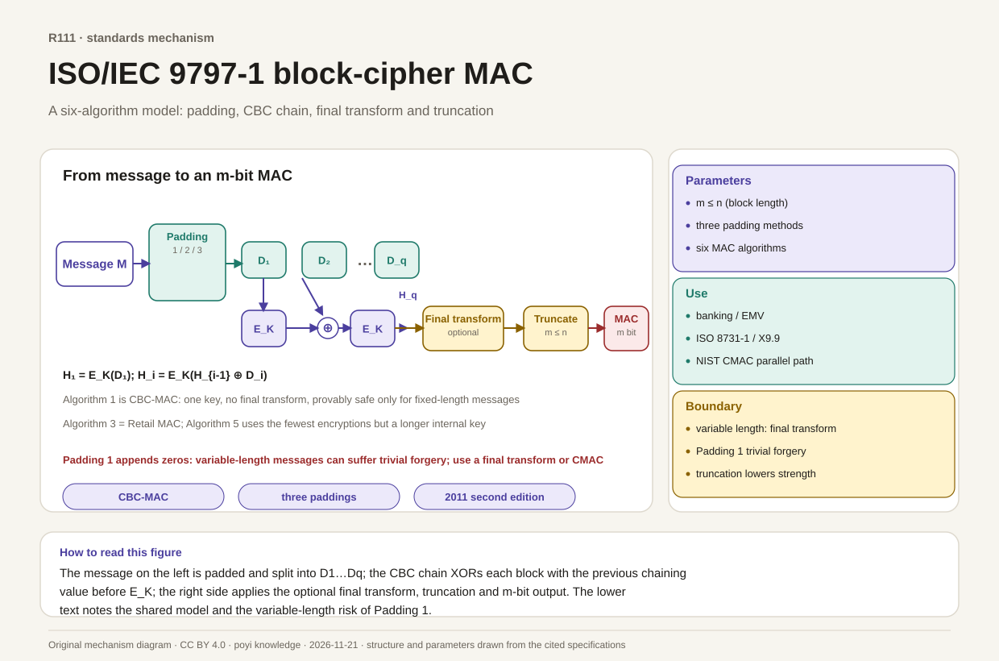
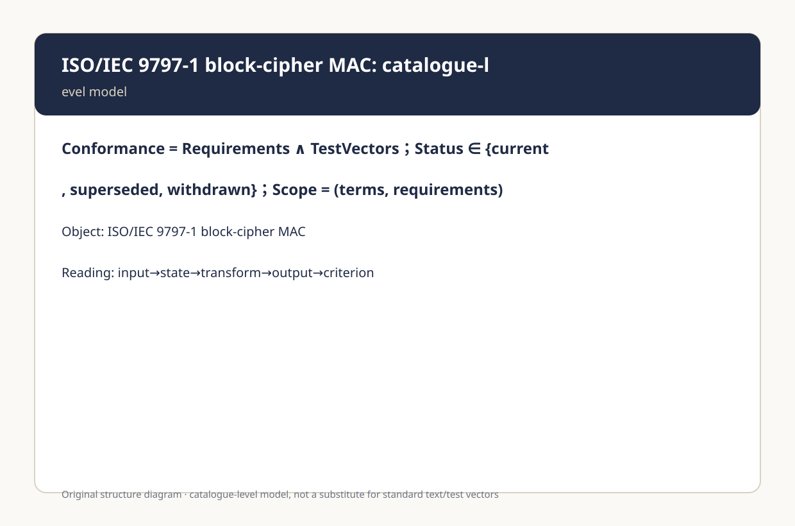

Principles
Standard: ISO/IEC 9797-1 block-cipher MAC (ISO/IEC 9797-1 分组密码 MAC). ### One model, six algorithms
ISO/IEC 9797-1 does not define a single MAC; it defines a model for MACs based on an n-bit block cipher: key derivation, padding, splitting, initial transformation, iteration, final/output transformation and truncation. The MAC length m is at most the block length n; strength depends on key length and secrecy, block-cipher strength, m and the specific mechanism. ### Padding and the CBC chain
The standard defines three padding methods: method 1 appends zero bits; method 2 appends a single 1 then zeros; method 3 prefixes an n-bit length block, then pads with zeros. Algorithm 1 is CBC-MAC: H1 = E_K(D1), H_i = E_K(H_{i-1} ⊕ D_i), output H_q, optionally truncated to m bits. Algorithms 2/3 add one or two final transforms, with Algorithm 3 also called Retail MAC; Algorithm 4 adds transforms at both ends; Algorithms 5/6 are single-chain optimized variants. ### What changed in 2011
The first edition appeared in 1999. The 2011 second edition replaced the 1999 Algorithms 5/6 (two parallel CBC-MAC computations) with more efficient single-CBC-chain algorithms, added OID Annex A, updated security analysis Annex C and added Annex D on relations to older standards. Amendment 1 followed in 2023.

Why it matters
A block-cipher MAC reuses existing AES/DES hardware and introduces no new hash; the CBC chain is simple and streamable, which suits financial messages, smart cards and protocol authentication. It bases message integrity and origin authentication on the same block-cipher assumption.
Plain CBC-MAC is provably secure only for fixed-length messages. With Padding 1, an attacker can append blocks and preserve the MAC, a trivial forgery; a final transform (Algorithms 2/3/4) or CMAC is needed for variable-length messages. Truncating to m bits lowers forgery probability to about 2^-m but also weakens the tag.
Applications
The MACs in ISO 8731-1, ANSI X9.9, X9.19 and ISO 9807 are special cases of ISO/IEC 9797-1; banking messages, EMV and ISO 8583 deployments commonly use CBC-MAC or Retail MAC. NIST SP 800-38B's CMAC is a separate standardized path, often compared with these mechanisms.
Saying “use ISO/IEC 9797-1” is not enough. Both sides must agree on the block cipher, padding method, algorithm number, MAC length and key-derivation method; any mismatch breaks interoperability or lowers security.

Limits & attacks
Annex B explicitly notes that Padding 1 can suffer trivial forgery; the CBC-MAC security proof assumes fixed-length messages. For variable-length messages, use a final-transform algorithm or CMAC, and never share the MAC key with encryption.
An m-bit tag has forgery probability about 2^-m; a 32-bit tag is too short for high-speed networks. Key derivation needs domain separation, and verification must compare in constant time. Implementations must also assess timing, fault injection and side channels, because MAC verification failures are often used as padding oracles.
History
ISO/IEC 9797-1:1999 first consolidated CBC-MAC and its variants; the March 2011 second edition made a technical revision, replaced Algorithms 5/6, added OIDs and updated the security analysis; it was confirmed current in 2022, and Amendment 1 appeared in 2023. It grew out of banking MAC practice in ISO 8731-1 and ANSI X9.9 and later expanded to general IT security.
Worked example & verification
Formal model and reproduction steps
[S=\min_i S_i,\quad S_i\in{\text{密钥强度},\text{分组安全},\text{实现安全}}]
ISO/IEC 9797-1 block-cipher MAC: the registered public parameters, key material or randomness, and message are mapped through the stated transformation to an output checked against the registered criterion. The worked example is a structural reproduction, not a new test vector; parameter ranges, standard versions and implementation details remain source-bound.
References
- Wikipedia search entry for ISO/IEC 9797-1 分组密码 MAC. https://zh.wikipedia.org/w/index.php?search=ISO%2FIEC%209797-1%20%E5%88%86%E7%BB%84%E5%AF%86%E7%A0%81%20MAC
- Handbook of Applied Cryptography (Menezes, van Oorschot, Vanstone). https://www.cacr.math.uwaterloo.ca/hac/